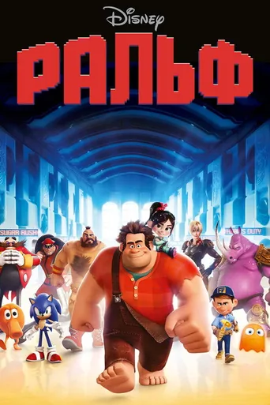

Ральф 2012
Ральф – второстепенный персонаж восьмибитной компьютерной игры, и ему надоело находиться в тени главного героя, мастера на все руки Феликса, который всегда появляется, чтобы «исправить» ситуацию! После тридцати лет добросовестной работы в роли злодея, в течение которых все похвалы выпадали на долю Феликса, Ральф больше не хочет быть плохим. Он решает отправиться в путешествие по аркадным играм разных жанров, чтобы доказать всем, что и он тоже может быть героем. На своем пути Ральф встречает героев разных игр - хладнокровную сержанта Калхун из игры Hero’s Duty, оберегающую планету от нашествия инопланетных захватчиков, и сладкую на вид, но острую на язычок Сластену фон Дю, чье существование в гоночном симуляторе Sugar Rush внезапно оказывается под угрозой. Наконец-то Ральфу выпадает шанс показать, что он умеет не только разрушать!
Открыть в каталогеДанные и постеры принадлежат их правообладателям. Этот продукт использует TMDB API, но не одобрен и не сертифицирован TMDB.